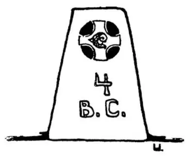

36
“Thine is the Kingdom, the Power, and the Glory”
“国度、权柄、荣耀，全是你的”

AUGUSTUS Caesar had been Ruler of the World.
He had found Rome brick and left it marble.
He had had a month named after him, and
He had been made a god!
Surely no one could ever be greater than he! Yet a greater man than he was living at the very same time—although Augustus himself knew nothing about Him and lived and died without ever having heard of Him. This man was born in the eastern part of Augustus's empire in a tiny little village called Bethlehem, and His name was Jesus.
For many, many years after Jesus was born no one except His family and friends knew or cared anything about His birth or paid the slightest attention to it.
Jesus was a Jew, the son of a carpenter. As a boy and young man He led a very simple and quiet life working in His father's shop. He did not begin to preach until He was more than thirty years old. Then He went about teaching the people what we learn today as the Christian religion.
He taught that there was one God over all.
He taught brotherly love, that one should love one's neighbor as oneself.
He taught the Golden Rule; that is, “Do unto others as you would have them do unto you.”
He taught that there was a life after death for which this short life on earth was only a preparation; that therefore you should “lay up your treasures in heaven” by doing good works here.
Some of the Jews listened to Jesus and believed what He taught them. They thought He was going to set them free from the rule of the Romans, which they hated. Some of the temple priests, however, were afraid of what Jesus taught. Because so many people listened to Him and believed in Him, the priests were afraid they would lose their influence to a man whose ideas they believed were wrong. So they plotted to have Him put to death.
Now the men who were plotting Jesus's death could not have Him put to death without the permission of the Roman ruler of that part of the empire where Jesus lived. This ruler was named Pilate. So they went to Pilate and told him that Jesus was trying to make Himself king. Jesus of course meant and always said that He was a heavenly ruler and not an earthly king. These men knew that Pilate would not care at all what religion Jesus taught. There were all sorts of religions in the Roman Empire—those that believed in idols and those that believed in the sun, moon, and so on. One more new religion made little difference to the Romans, and Jesus would not be put to death simply for teaching another. But the priests knew if they could make Pilate believe that Jesus was trying to make Himself a king, that was a thing for which He could be crucified. Pilate did not believe much in what they said against Jesus. It was a small matter to him. But he wanted to please them and keep his government in order, so he told them he would have Jesus put to death because they wanted it. So He was crucified.
Jesus had chosen twelve of his fellow Jews to teach what he told them. These twelve men were called apostles. After Jesus was crucified, the apostles went through the land teaching the people what He had taught them. Those who believed in and followed His teachings were called disciples of Christ (the Greek word for “messiah”) or Christians. The apostles were teachers; the disciples were pupils.
One thing that no Christian, or Jew either, could do was worship the Roman emperor. Most people in the empire found it easy to add one new god, but Christians, of course, could not do that. The Romans thought that these disciples of Christ were trying to start a new world empire and that they were against Rome and the emperor and should be arrested and put in prison. The Christians, therefore, held their meetings in secret places, sometimes even underground, so that they would not be found and arrested.
After a while the leaders of the Christians became bolder. They came out of their secret places and taught and preached openly, although they knew they might sooner or later be thrown into prison and perhaps killed. Indeed, so strongly did they believe in the teachings of Christ that they seemed even glad to die for His sake, as He had died on the cross for them.
In the first hundred years after Christ, there were a great many Christians put to death because they were thought traitors. Christians who died for Christ's sake were called martyrs . The first martyr was named Stephen. He was stoned to death about 33 A.D..
One of the men who helped in putting Stephen to death was a man named Saul. Saul was a Roman citizen and, like other Roman citizens, was proud of that fact. He thought the Christians were enemies of his country, and he did everything he could to have the Christians punished. Then, all of a sudden, Saul had a change of heart and came to believe in the religion of the very people whom he had been fighting. Whatever Saul did or whatever he believed, he did or believed with his whole soul. Though he had never seen Christ, he became one of the chief Christians and then was made an apostle and was called by his Roman name, Paul.
Paul preached the new religion far and wide just as earnestly as he had fought against it at first. Then he, too, was condemned to death. Paul, however, was, as I have said, a Roman citizen, and a Roman citizen could not be put to death by the ordinary judges who were not Roman citizens nor in the ordinary way by crucifying. So Paul appealed to the emperor, but he was put in prison in Rome and afterward beheaded. He is now known as St. Paul.
Peter was another of the chief apostles. Christ had said to him, “I will give unto thee the keys of the kingdom of heaven.” ［1］ Peter, too, was thrown into prison, and was sentenced to be crucified. He asked to be crucified with his head downward. He thought it too great an honor to die in just the same way as his Lord. On this spot in Rome where Peter was put to death was built long afterward the largest church in the world, the Cathedral of St. Peter.
As everything before Christ's birth is called B.C. and everything since his birth is called A.D., you would naturally suppose that 0 would be the date of His birth.
It was not until some five hundred years later that people began to date from Christ's birth. And then, when they did begin to date from this event, they made a mistake. It was found out that Christ was really born four years before He was supposed to have been born—that is, in 4 B.C。—but when the mistake was found out, it was then too late to change.
【中文阅读】
奥古斯都•恺撒曾是全世界的统治者。
他得到的罗马是砖做的，而留下的罗马是大理石做的。
他的名字用来命名一个月份，而且
他死后还被奉为神明！
肯定没有人会比他更伟大了！但是，有个人与奥古斯都生活在同一个时代，却比他更伟大——不过奥古斯都本人对他一无所知，一辈子也没听说过这个人。这个人出生于奥古斯都的帝国东部一个叫伯利恒的小村庄，他的名字叫耶稣。
在耶稣出生后的很多很多年，除了他的家人和朋友，没人知道或在意他的出生， 哪怕一点点的关注也不曾有。
耶稣是个犹太人，一个木匠的儿子。青少年时期，他在他父亲的店里工作，过着非常简单、宁静的生活。他三十多岁之后，才开始传教布道。这时，他开始教诲人们的，正是我们现在已作为基督教而学的教义。
他教诲人们，整个宇宙只有一个上帝。
他教诲人们要像兄弟一样互相友爱，教诲人们应该爱人如己。
他教诲的“为人准则”是：“你想人家怎样待你，你也要怎样待人。”
他教诲人们，人死后有另一种人生，地球上的短促一生只是为来生作准备；因此，要通过此世的积德行善，才能“积攒财宝在天上”。
有些犹太人倾听耶稣的宣讲，并且相信他所教诲的一切。他们认为他要把他们从罗马人的统治下解救出来，他们对罗马人的暴政已痛恨万分。然而，有些祭司则对耶稣的教诲心存忌惮。因为有那么多人倾听他，信任他，祭司们担心，由于这个人的存在，他们会失去他们的权势，他们认为他的观点是错误的。于是，他们密谋把耶稣处死。
但是，如果没有耶稣所属地区的罗马帝国长官的同意，这些祭司们想要害死耶稣的阴谋是不能得逞的。这个长官叫彼拉多。于是，祭司们就去找彼拉多，告诉他耶稣试图要称王。耶稣的意思当然是指他是天国的统治者，而不是尘世间的国王，他也总是这么宣讲的。这些祭司们知道彼拉多一点都不关心耶稣所宣传的宗教。罗马帝国内有各种各样的宗教信仰——有些人信仰多神教，还有些人信仰太阳、月亮等等。多了一个新的宗教对罗马人来说没什么影响，仅仅因为耶稣宣扬了另一种宗教是不能将他处死的。但是，祭司们明白，如果他们使彼拉多相信耶稣试图要称王，那才构成一项严重罪行，足以使耶稣钉十字架。彼拉多对祭司们控告耶稣的话并不怎么相信，在他看来，这事无关紧要。但是他想讨好这些祭司，也好让自己的统治不出乱子，于是他对祭司们说，他会处死耶稣，因为是他们提出了这样的要求。耶稣就这样被钉死在十字架上了。
耶稣生前曾选了十二个犹太同胞去传布他的教诲。这十二个人被称为“使徒”。耶稣被处死后，使徒们四处游历向众人传布耶稣对他们的教训。那些信仰和遵循耶稣教训的人被称为基督 ［2］ 的门徒或基督徒。使徒是老师，而门徒是学生。
有一件事基督徒或犹太教徒绝不能做，那就是敬奉罗马皇帝。大多数罗马帝国的人可以很轻易地在自己的信仰中又添一个神灵，而基督徒当然是不能那样做的。罗马人认为这些基督徒想要开创一个新的世界帝国，他们是在和罗马以及罗马皇帝作对，所以应当把他们抓起来关进监狱。因此，基督徒在秘密的地方集会，有时甚至在地下，以免自己暴露、被抓。
过了一段时间以后，基督徒的领导者们变得大胆了。他们从秘密集会的地方走出来，公开地传教布道，尽管他们知道自己迟早会被关进监狱，很可能还会被处死。其实，他们对耶稣教导的信仰已是坚定不移，似乎为了基督他们甚至愿意牺牲自己 的生命，就如耶稣为了他们而死在十字架上一样。
在耶稣死后一百年内，许许多多的基督徒被作为叛徒处死。为了基督而牺牲的基督徒被称为“殉道者”。第一位殉道者名叫司提反。他大约在公元33年被人用石头砸死。
在帮忙处死司提反的人中有个人叫扫罗。扫罗是一名罗马公民，和其他罗马人一样，他为自己身为罗马人而深感自豪。他认为基督徒是国家的敌人，所以尽一切努力要让基督徒受到惩罚。后来，扫罗忽然改变了态度，转而皈依他一直在迫害的那些人的宗教。不管扫罗做什么和信仰什么，他都是真心诚意的。虽然他从没见过基督，却成为基督徒的首要人物之一，后来被认为是使徒，人们用他的罗马名叫他保罗。
保罗四处宣讲新宗教，就跟当初反对它一样尽心竭力。后来，他也被判死刑。不过，我在前面提到过，保罗是罗马公民，而非罗马公民的普通法官是不能处死罗马公民的，也不能用钉死在十字架上这种普通方式来处决他。于是，保罗向罗马皇帝上诉，但是他还是被关进了罗马的监狱，后来被斩首。现在他被称为“圣保罗”。
彼得是另一位主要使徒。耶稣曾对他说：“我把天国的钥匙给你。”后来，彼得也被关进监狱，被判决钉十字架。他要求头朝下被钉死在十字架上。因为耶稣就是被钉十字架而死的，他觉得和他的主一样死去是一种莫大的荣耀。很久之后，在彼得被处死的地方，罗马建成了世界上最大的教堂，圣彼得大教堂。
因为耶稣诞生之前的时间都称为公元前，他诞生之后的时间都称为公元，你自然会认为他诞生的日期就是0了。
大约在耶稣诞生五百多年后，人们才开始以耶稣诞生的时间为起点来纪年。可他们开始正式以此事纪年时，却犯了个错。后来，人们才发现，耶稣真正出生的时间比人们认为他出生的时间早4年——也就是在公元前4年——但是，人们发现这个错误的时候，已经太迟了，来不及改正了。

公元前4年